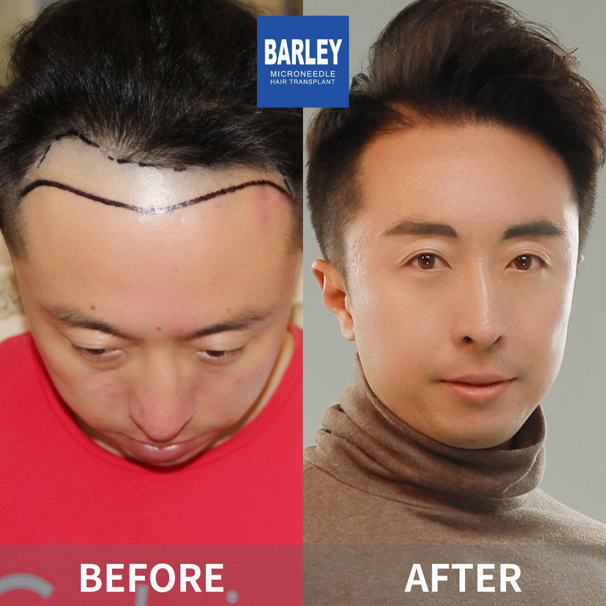

Our English-speaking international patient team is ready to help — reach out through any channel below for a free, no-obligation consultation
15810155700
+86 13730143529
hairtransplant@qq.com

Everyone's hair loss journey and solution are unique due to a variety of factors. Our hair restoration experts will assist you in determining the root cause and the best solution for your hair restoration plan. If you have any questions, please ask; we are happy to assist.

Your journey to affordable, world-class hair restoration begins with a single message
Every inquiry receives a thorough review from our medical team. We evaluate your hair loss pattern, donor area availability, and personal goals to recommend the best treatment plan — completely free and with no strings attached.
From your first message through your final follow-up, a dedicated patient coordinator guides you at every step. No language barriers, no confusion — just clear, professional support from start to finish.
Our streamlined booking process gets you scheduled quickly. We also handle airport transfers, hotel reservations, and visa invitation letters so you can focus on your transformation while we take care of the logistics.
With 30+ clinics in major cities, we'll help you find the most convenient location — just reach out and ask
Flagship Clinic
Capital Clinic
South China Clinic
Pearl River Delta Clinic
West China Clinic
East China Clinic
Central China Clinic
Jiangsu Clinic
Southwest Clinic
Northwest Clinic
North China Clinic
Suzhou Clinic
Qingdao Clinic
Northeast Clinic
Southeast Coast Clinic
Ningbo Clinic
Fujian Clinic
Hunan Clinic
Henan Clinic
Yunnan Clinic
Heilongjiang Clinic
Jinan Clinic
Liaoning Clinic
Jiangxi Clinic
Guangxi Clinic
Anhui Clinic
Wenzhou Clinic
Foshan Clinic
Dongguan Clinic
Kunshan Clinic
Yangzhou Clinic
Taizhou Clinic
Xuzhou Clinic
Nantong Clinic
Changzhou Clinic
Shanxi Clinic
Trusted by patients from over 50 countries for exceptional results and outstanding care
Pioneering microneedle hair transplantation since 2006 with a commitment to continuous innovation
Proprietary microneedle extraction and implant systems delivering consistently high graft survival rates
Over 20 experienced surgeons, each with thousands of successful procedures under their belt
Full English support from initial inquiry through recovery and long-term follow-up care
Nationwide network with consistent quality standards and state-of-the-art facilities
Consistently exceeding expectations with 95%+ graft survival and natural-looking results
Browse before-and-after photos from our actual patients



Celebrating successful results with our patients

After a successful procedure

Celebrating great results with our team

Another satisfied patient

Ready to go home with confidence

Post-treatment with Dr. Chen

Proud of the new look

Delighted with the transformation

Starting fresh with amazing results
Hear from our satisfied patients around the world
"I messaged them on WhatsApp at 11 PM my time from London and got a reply within two hours. The coordinator sent me a full consultation booking link, hotel options near the clinic, and even the visa invitation letter template — all in one conversation."
"The virtual consultation through Zoom was incredibly thorough. The doctor reviewed my scalp photos in real time, estimated my graft count on screen, and gave me a price range before I even booked my flight. That transparency is what sealed the deal."
"I was picked up from Beijing Capital Airport by a clinic driver holding a sign with my name — no taxi haggling, no confusion, no stress. The contact page said they'd arrange airport pickup, and they delivered exactly that. First impressions matter."
"The booking process was shockingly straightforward. Three messages on WhatsApp, a deposit via credit card, and I had a confirmed appointment date. My coordinator then sent a PDF with a packing list, pre-op instructions, and a day-by-day itinerary."
"I emailed them at 2 AM my time from Toronto and they responded within three hours with a detailed treatment plan attached as a PDF. The email included graft estimates, recommended technique, cost breakdown, and a link to schedule a video call. Professionalism at its best."
"My coordinator, Jessica, stayed in touch with me for the entire month after I returned to Sydney. She checked my healing photos, reminded me about follow-up appointments, and even sent me the clinic's recommended shampoo brand that I could buy online. She treated me like a friend, not a patient number."
Take a look inside our modern, patient-focused facilities

A warm welcome awaits

Equipped with the latest technology

Relax before your procedure

Sterile and fully equipped

Private and comfortable

Rest in comfort after your procedure
Everything you need to know about contacting us and booking your hair transplant in China